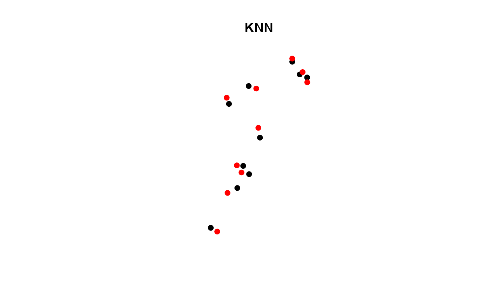

Find K nearest neighbors for two spatial objects
Finds nearest neighbor in x based on y and returns rownames, index and distance, If ids is NULL, rownames of x are returned. If coordinate matrix provided, columns need to be ordered [X,Y]. If a radius for d is specified than a maximum search radius is imposed. If no neighbor is found, a neighbor is not returned
You can specify weights to act as covariates for x and y. The vectors or matrices must match row dimensions with x and y as well as columns matching between weights. In other words, the covariates must match and be numeric.
knn( y, x, k = 1, d = NULL, ids = NULL, weights.y = NULL, weights.x = NULL, indexes = FALSE )
Arguments
| y | Spatial points or polygons object or coordinates matrix |
|---|---|
| x | Spatial points or polygons object or coordinates matrix |
| k | Number of neighbors |
| d | Optional search radius |
| ids | Optional column of ID's in x |
| weights.y | A vector or matrix representing covariates of y |
| weights.x | A vector or matrix representing covariates of x |
| indexes | (FALSE/TRUE) Return row indexes of x neighbors |
Value
A data.frame with row indexes (optional), rownames, ids (optional) and distance of k
See also
nn2 for details on search algorithm
Author
Jeffrey S. Evans <jeffrey_evans@tnc.org>
Examples
library(sp) data(meuse) coordinates(meuse) <- ~x+y idx <- sample(1:nrow(meuse), 10) pts <- meuse[idx,] meuse <- meuse[-idx,] meuse$IDS <- 1:nrow(meuse) # Find 2 neighbors in meuse ( nn <- knn(pts, meuse, k=2, ids = "IDS", indexes = TRUE) )#> idx1 idx2 ids1 ids2 dist1 dist2 #> 1 135 136 135 136 125.03200 181.10770 #> 2 55 50 55 50 133.76472 136.61625 #> 3 97 65 97 65 183.35757 270.22398 #> 4 65 102 65 102 131.02671 137.31715 #> 5 31 33 31 33 62.62587 169.00000 #> 6 56 57 56 57 110.72488 117.54574 #> 7 103 65 103 65 107.37784 114.72576 #> 8 48 47 48 47 167.19450 207.32824 #> 9 32 31 32 31 81.02469 117.79643 #> 10 22 21 22 21 53.00000 76.02631# Using covariates (weights) wx = as.matrix(meuse@data[,1:3]) wy = as.matrix(pts@data[,1:3]) ( nn <- knn(pts, meuse, k=2, ids = "IDS", indexes = TRUE, weights.y=wy, weights.x=wx) )#> idx1 idx2 ids1 ids2 dist1 dist2 #> 1 135 136 135 136 129.88518 181.3386 #> 2 55 51 55 51 177.17847 229.8103 #> 3 97 144 97 144 184.14712 353.7544 #> 4 102 103 102 103 137.37918 253.7815 #> 5 31 33 31 33 64.24671 170.2551 #> 6 113 57 113 57 159.33926 173.6855 #> 7 103 64 103 64 108.83033 194.1445 #> 8 48 98 48 98 172.64487 223.2444 #> 9 32 31 32 31 81.05652 118.9832 #> 10 22 21 22 21 54.57115 114.7465#> ids1 ids2 dist1 dist2 #> 1 149 151 125.03200 181.10770 #> 2 60 54 133.76472 136.61625 #> 3 105 76 183.35757 270.22398 #> 4 76 114 131.02671 137.31715 #> 5 32 37 62.62587 169.00000 #> 6 61 62 110.72488 117.54574 #> 7 116 76 107.37784 114.72576 #> 8 52 51 167.19450 207.32824 #> 9 35 32 81.02469 117.79643 #> 10 22 21 53.00000 76.02631